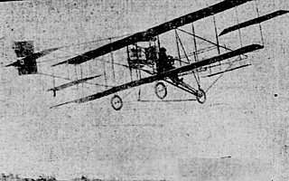

The Early Birds Monument is the only permanent sculpture on Governors Island, as well as the only tribute to the island's part in the early days of aviation. This rough-cut granite marker has a bronze propeller that was cast from a wooden one used by Wilbur Wright. It was dedicated it on Dec. 17, 1954 to honor pioneering aviators called the Early Birds, an organization of pilots who flew solo before Dec. 17, 1916.
The monument is situated on a small triangular plot at the intersection of Division Road and Early Bird Road, in front of Liggett Hall. The location is site-specific and significant—it was chosen with great care. The monument faces what was the landing field for numerous early flights by the men (and one woman, aviatrix Ruth Bancroft Law) who literally were the first pilots. The field in front of the monument was the landing strip, and an important part in American history.

Glenn Curtis over the island in 1910.
In 1909 during the Hudson-Fulton Celebration, Wilbur Wright made two round trip flights from Governors Island, one around the Statue of Liberty on September 25, and the second up the Hudson River to Grant's Tomb and back, on October 4. These were the first two flights over American waters; millions of spectators lined the riverbanks for a glimpse of the airplane with Wilbur Wright at the controls. Six months later, on May 29, 1910, aviator Glenn Curtiss landed on Governors Island at the end of his solo flight over the Hudson River from Albany, winning a $10,000 prize offered by publisher Joseph Pulitzer for re-tracing Henry Hudson's route. Just prior to the United States' entrance into World War I, Governors Island was home to an aviation-training center organized by civilians to promote military aviation.
The eight tons of granite for the monument was quarried on Deer Island in Penobscot Bay, Maine. Fasolino Monuments of Woodside, Queens, performed the stonework. The bronze propeller was cast directly from one of the two propellers used on the first United States military airplane, a 1909 Wright. Modern Art Foundry of Long Island City made the casting. Atlas Pattern and Model Works in Brooklyn cast the other bronze work on the monument. The monument was unveiled in a fitting manner: an Army helicopter hovered and lifted a parachute off it during a ceremony. Following the dedication, Central Avenue was renamed Early Bird Road.